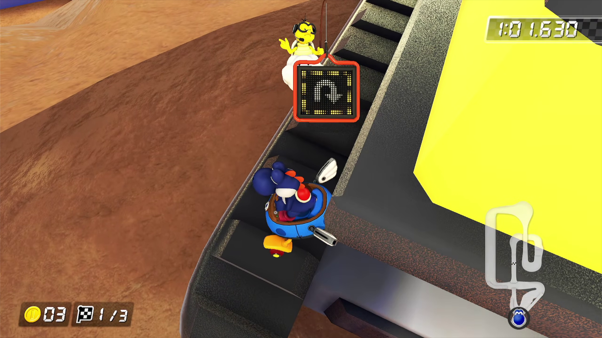
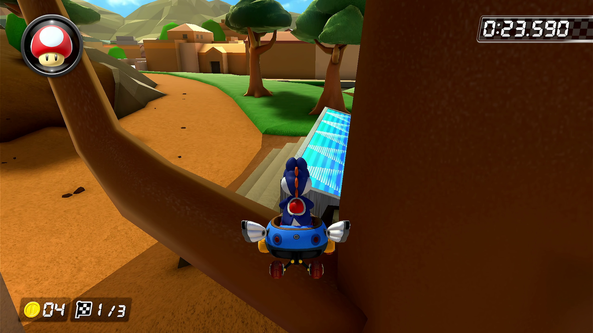

Stuck Glitch
There are objects on the stage that you can get stuck in. Once you're stuck, you can't use the accelerator or jump, and you won't be able to get out unless you use items like Stars or Killers.
Some of the courses have objects and terrain in between. Here are some examples.
Waruigi Studium

Atene Poris

twisted manshon